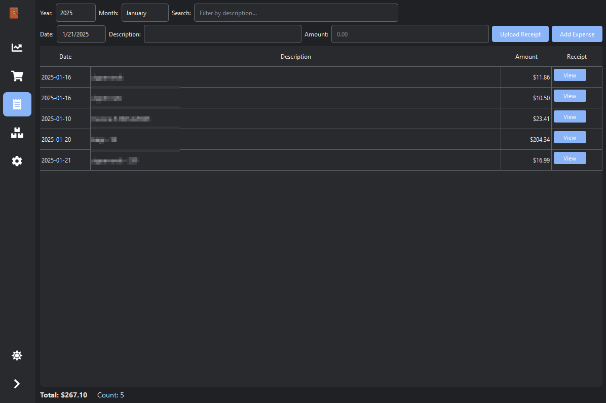
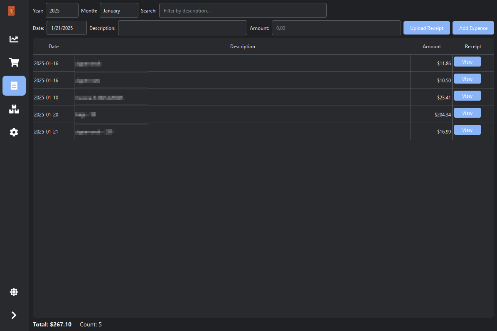

Key Features
CSV Import
Import and analyze your Etsy sales data directly from CSV statements
Expense Tracking
Track and categorize your business expenses with receipt management
Sales Analytics
View your sales trends and performance metrics in an intuitive dashboard
Light & Dark Modes
Work comfortably with automatic theme switching based on your system preferences
Application Screenshots
 


Support Development
If you find EtsyTrackr helpful, consider supporting its development. Your donation helps keep the project alive and enables new features!